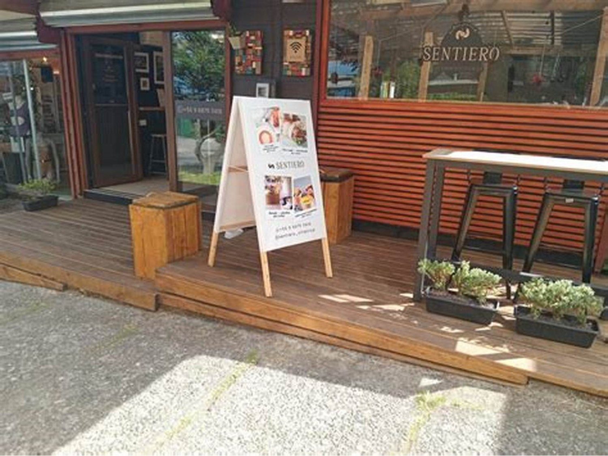

Restaurante · Villarrica
Una mesa
para la noche
que importa
Un aniversario, una pedida, el cumpleaños de la mamá. Se llama, se pregunta lo mismo de siempre y se corta sin saber la mitad. Esta página contesta antes.
- nota en Google
- 4,8
- reseñas
- 90
- página propia
- ninguna
Antes de salir de la casa
Llegar
La mesa se pide por mensaje, sin llamar y sin esperar que alguien conteste en medio del servicio. Se escribe una vez y queda.
Lo primero que pregunta cualquiera
Pedir
Antes de reservar, la gente quiere saber qué come. Hoy no hay dónde verlo: ni la carta, ni el rango de precios, ni si hay algo para el que no come carne.
-
¿Qué tipo de cocina es?
falta: confirmarlo
El nombre sugiere algo, pero sugerir no es decir. Escrito en una línea, deja de perderse gente que buscaba justo eso.
-
¿Cuánto sale comer acá?
falta: el rango
No hace falta la carta con precios. «Un plato de fondo va entre tanto y tanto» alcanza para que la pareja decida sin llamar.
-
¿Hay algo sin carne?
falta: confirmar
Basta que uno del grupo no coma carne para que el grupo entero elija otro lado. Es la pregunta que decide mesas de cuatro.
-
¿Qué días y hasta qué hora?
falta: el horario
El dato más pedido de todos y el que más veces falta.
Cuatro líneas de texto. Ninguna cuesta plata y las cuatro se contestan hoy por teléfono, una por una, todos los días.

La foto que decide la reserva
La terraza de madera y el pizarrón en la puerta
Quien busca dónde celebrar algo mira tres cosas: si el lugar se ve cuidado, si hay dónde sentarse cómodo y si el menú está a la vista. Esta foto contesta las tres de un vistazo, y es de ellos. Lo que falta —y es lo que cierra la reserva— es una foto del salón de noche, con las mesas puestas y la luz baja: el momento exacto que el cliente está imaginando cuando llama.
La llamada de todos los viernes
Celebrar
Cuando alguien reserva por una ocasión, no pregunta por la comida: pregunta estas cinco cosas. Son siempre las mismas y ninguna página de restaurante las tiene escritas.
-
¿Puedo llevar la torta?
falta: sí / no / con aviso
La primera que preguntan y la que más veces hace que el grupo se vaya a otro lado. Si la respuesta es «sí, avisando antes», conviene que esté escrito con esas mismas palabras.
-
¿Cobran por servirla o descorche?
falta: monto o «no se cobra»
Que aparezca en la cuenta sin haberse avisado es motivo de reseña mala. Dicho antes, no molesta a nadie.
-
¿Se puede decorar la mesa?
falta: qué sí y qué no
Globos, un cartel, unas velas. Lo que se permite y lo que no, en dos líneas: la gente respeta la regla cuando la conoce.
-
¿Hay una mesa más tranquila?
falta: cuál y si se puede pedir
Para una pedida de mano importa más que la carta. Si existe el rincón, decirlo es lo que gana esa reserva.
-
¿Hasta cuántas personas reciben?
falta: el tope y desde cuándo avisar
Una mesa de doce no se improvisa. El número y el plazo evitan la reserva que no se puede cumplir.
Cinco respuestas cortas. Es la sección que ningún restaurante de la zona tiene y la única razón por la que alguien elegiría reservar acá en vez de seguir llamando.
Una mesa para la noche que importa
Y saber, antes de llamar, que la van a tener
Lo que queda después
Volver
Un 4,8 con noventa reseñas se gana atendiendo bien noventa veces. Lo que falta no es la cocina: es que quien todavía no vino pueda encontrarlos.
- Dirección
- falta
- Teléfono
- falta
- Días y horario
- falta
- Nota en Google
- 4,8 · 90 reseñas